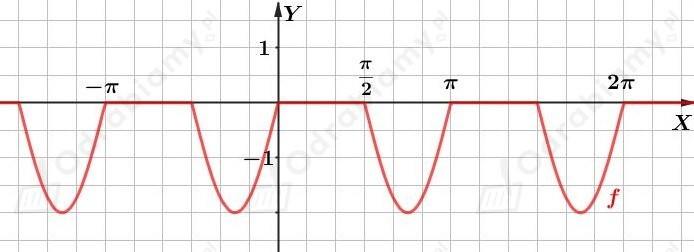
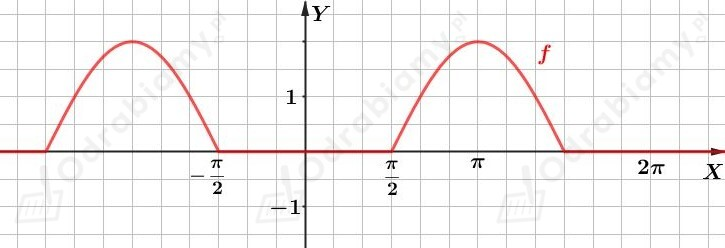
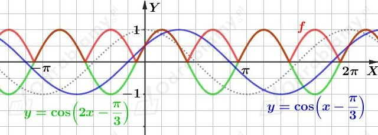
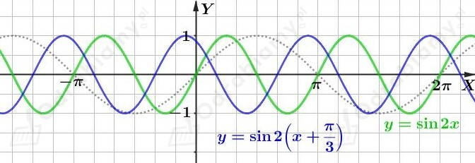
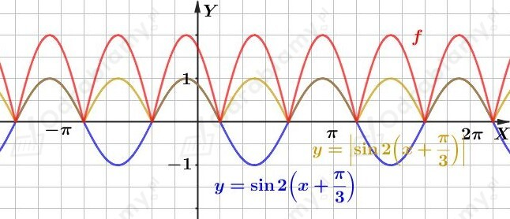
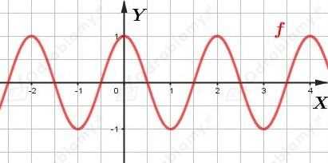
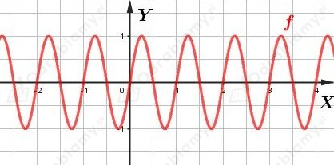
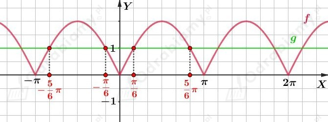

a)
Rozwiążmy równanie:
Korzystając ze wzoru na iloczyn sinusa i cosinusa otrzymujemy:
Korzystając z własności sin(-𝛼)=sin𝛼 mamy:
czyli
Wypiszmy pierwiastki tego równania należące do przedziału ⟨-𝜋/2, 𝜋/2⟩. Mamy:
b)
Rozwiążmy równanie:
Korzystając ze wzoru na iloczyn sinusa i cosinusa otrzymujemy:
Korzystając z własności sin(-𝛼)=sin𝛼 mamy:
czyli
Wypiszmy pierwiastki tego równania należące do przedziału ⟨-𝜋/2, 𝜋/2⟩. Mamy:
c)
Rozwiążmy równanie:
Korzystając ze wzoru na iloczyn cosinusów otrzymujemy:
czyli
Wypiszmy pierwiastki tego równania należące do przedziału ⟨-𝜋/2, 𝜋/2⟩. Mamy:
d)
Rozwiążmy równanie:
Korzystając ze wzoru na iloczyn sinusa i cosinusa otrzymujemy:
Korzystając ze wzoru na sinus podwojonego kąta mamy:
czyli
Wypiszmy pierwiastki tego równania należące do przedziału ⟨-𝜋/2, 𝜋/2⟩. Mamy:
a)
Rozwiążmy nierówność:
Korzystając ze wzoru skróconego mnożenia na kwadrat różnicy oraz ze wzoru na sinus podwojonego kąta otrzymujemy:
Korzystając z własności wartości bezwzględnej mamy:
czyli uwzględniając badany przedział mamy:
b)
Rozwiążmy nierówność:
Korzystając ze wzoru na cosinus podwojonego kąta mamy:
Korzystając ze wzoru skróconego mnożenia na kwadrat różnicy mamy:
Korzystając z własności wartości bezwzględnej mamy:
czyli
c)
Rozwiążmy nierówność:
Korzystając ze wzoru skróconego mnożenia na kwadrat sumy mamy:
Korzystając z jedynki trygonometrycznej mamy:
Kwadrat dowolnej liczby jest liczbą nieujemną, więc uwzględniając badany przedział mamy:
d)
Rozwiążmy nierówność:
Korzystając ze wzoru na cosinus podwojonego kąta mamy:
Korzystając ze wzoru na sinus podwojonego kąta mamy:
Korzystając ze wzoru na sinus podwojonego kąta mamy:
Ponieważ sinx∈⟨-1, 1⟩, to powyższa nierówność równoważna jest równaniu:
Uwzględniając badany przedział mamy:
a)
Dana jest funkcja f określona wzorem:
Zapiszmy wzór funkcji f bez użycia symbolu wartości bezwzględnej. Korzystając z definicji wartości bezwzględnej mamy:
czyli
Naszkicujmy wykres funkcji f. Mamy:

Funkcja f jest funkcją okresową i jej okresem podstawowym jest T=𝜋.
b)
Dana jest funkcja f określona wzorem:
Zapiszmy wzór funkcji f bez użycia symbolu wartości bezwzględnej. Korzystając z definicji wartości bezwzględnej mamy:
czyli
Naszkicujmy wykres funkcji f. Mamy:

Funkcja f jest funkcją okresową i jej okresem podstawowym jest T=2𝜋.
a)
Dana jest funkcja f określona wzorem:
Korzystając ze wzoru na cosinus różnicy kątów mamy:
Naszkicujemy wykres funkcji f.
Wykres funkcji y=cosx przesuniemy równolegle o wektor [𝜋/3, 0] i otrzymamy wykres funkcji y=cos(x-𝜋/3).
Na podstawie wykresu funkcji y=cos(x-𝜋/3) otrzymujemy wykres funkcji y=cos(2x-𝜋/3) korzystając z faktu, że jeśli do wykresu funkcji y=cos(x-𝜋/3) należy punkt (x0, y0), to do wykresu funkcji y=cos(2x-𝜋/3) należy punkt (1/2x0, y0).
Część wykresu funkcji y=cos(2x-𝜋/3), która znajduje się pod osią OX odbijamy symetrycznie względem osi OX, pozostałą część wykresu pozostawiamy bez zmian i otrzymujemy wykres funkcji y=|cos(2x-𝜋/3)|.
Rysunek:

Wypiszmy miejsca zerowe funkcji f należące do przedziału ⟨1, 5⟩. Mamy:
b)
Dana jest funkcja f określona wzorem:
Korzystając ze wzoru na sinus podwojonego kąta mamy:
Naszkicujemy wykres funkcji f.
Na podstawie wykresu funkcji y=sinx otrzymujemy wykres funkcji y=sin2x korzystając z faktu, że jeśli do wykresu funkcji y=sinx należy punkt (x0, y0), to do wykresu funkcji y=sin2x należy punkt (1/2x0, y0).
Wykres funkcji y=sin2x przesuniemy równolegle o wektor [-𝜋/3, 0] i otrzymamy wykres funkcji y=sin2(x+𝜋/3).
Część wykresu funkcji y=sin2(x+𝜋/3), która znajduje się pod osią OX odbijamy symetrycznie względem osi OX, pozostałą część wykresu pozostawiamy bez zmian i otrzymujemy wykres funkcji y=|sin2(x+𝜋/3)|.
Na podstawie wykresu funkcji y=|sin2(x+𝜋/3)| otrzymujemy wykres funkcji y=2|sin2(x+𝜋/3)| korzystając z faktu, że jeśli do wykresu funkcji y=|sin2(x+𝜋/3)| należy punkt (x0, y0), to do wykresu funkcji y=2|sin2(x+𝜋/3)| należy punkt (x0, 2y0).
Rysunek 1:

Rysunek 2:

Wypiszmy miejsca zerowe funkcji f należące do przedziału ⟨1, 5⟩. Mamy:
a)
Dana jest funkcja f określona wzorem
Na podstawie wykresu funkcji y=cosx otrzymujemy wykres funkcji y=cos𝜋x korzystając z faktu, że jeśli do wykresu funkcji y=cosx należy punkt (x0, y0), to do wykresu funkcji y=cos𝜋x należy punkt (1/𝜋x0, y0).
Wykres:

Zapiszmy zbiór rozwiązań nierówności f(x)⩾0. Mamy:
b)
Dana jest funkcja f określona wzorem
Na podstawie wykresu funkcji y=sinx otrzymujemy wykres funkcji y=sin2𝜋x korzystając z faktu, że jeśli do wykresu funkcji y=sinx należy punkt (x0, y0), to do wykresu funkcji y=sin2𝜋x należy punkt (1/2𝜋x0, y0).
Wykres:

Zapiszmy zbiór rozwiązań nierówności f(x)⩾0. Mamy:
Dana jest funkcja f określona wzorem
Na rysunku w podręczniku przedstawiono wykres funkcji f.
a)
Wyznaczymy wartości współczynników a i b.
Z podanego wykresu funkcji f odczytujemy współrzędne dwóch punktów należących do wykresu tej funkcji i otrzymujemy układ równań postaci:
czyli
b)
Zauważmy, że
Dla wyznaczonych wartości a i b mamy:
Rozwiążemy nierówność:
czyli
a stąd
Dana jest równość:
Korzystając ze związku tg𝛼=sin𝛼/cos𝛼 otrzymujemy:
Korzystając ze wzoru na cosinus sumy kątów mamy:
Zauważmy, że x+y=𝜋/3 jest najmniejszym dodatnim argumentem, dla którego powyższa równość jest spełniona.
Założenie:
Teza:
Dowód:
Przekształcamy lewą stronę równości i mamy:
Korzystając ze wzoru skróconego mnożenia na różnicę kwadratów mamy:
Korzystając ze wzoru na cosinus podwojonego kąta mamy:
Korzystając ze wzorów redukcyjnych otrzymujemy:
Uzasadniliśmy prawdziwość podanej równości.
Wyznaczmy wartość liczby a. Mamy:
W liczniku ułamka korzystamy ze wzoru skróconego mnożenia na kwadrat sumy, a w jego mianowniku korzystamy ze wzoru na sinus sumy kątów. Mamy więc:
W liczniku ułamka korzystamy z jedynki trygonometrycznej. Mamy:
W liczniku ułamka korzystamy ze wzoru na sinus podwojonego kąta. Mamy:
W mianowniku ułamka korzystamy ze wzorów redukcyjnych. Mamy:
Rozwiążemy równanie
czyli
Korzystając ze wzoru na sinus podwojonego kąta oraz z tożsamości tgx=sinx/cosx mamy:
czyli rozwiązaniem tego równania są liczby postaci:
Największym ujemnym pierwiastkiem tego równania jest liczba
Dana jest zależność:
gdzie
Założenie:
czyli
Uwzględniając badany przedział otrzymujemy:
Rozwiążmy podane równanie:
Uwzględniając badany przedział otrzymujemy:
Wyznaczmy wartość liczby sin𝛼. Korzystając z jedynki trygonometrycznej mamy:
Wyznaczmy szukaną sumę:
Dana jest funkcja f określona wzorem:
Uprościmy wzór tej funkcji. Korzystając ze wzoru na sinus sumy kątów oraz sinus różnicy kątów mamy:
czyli
Dana jest funkcja g określona wzorem:
Uprościmy wzór tej funkcji. Mamy:
Korzystając z zależności sin(-𝛼)=-sin𝛼 oraz cos(-𝛼)=cos𝛼 otrzymujemy:
Korzystając ze wzoru na sinus różnicy kątów mamy:
czyli
We wspólnym układzie współrzędnych, narysujmy wykresy funkcji f i g. Mamy:

Na podstawie wykresów tych funkcji podamy zbiór rozwiązań nierówności
Mamy: